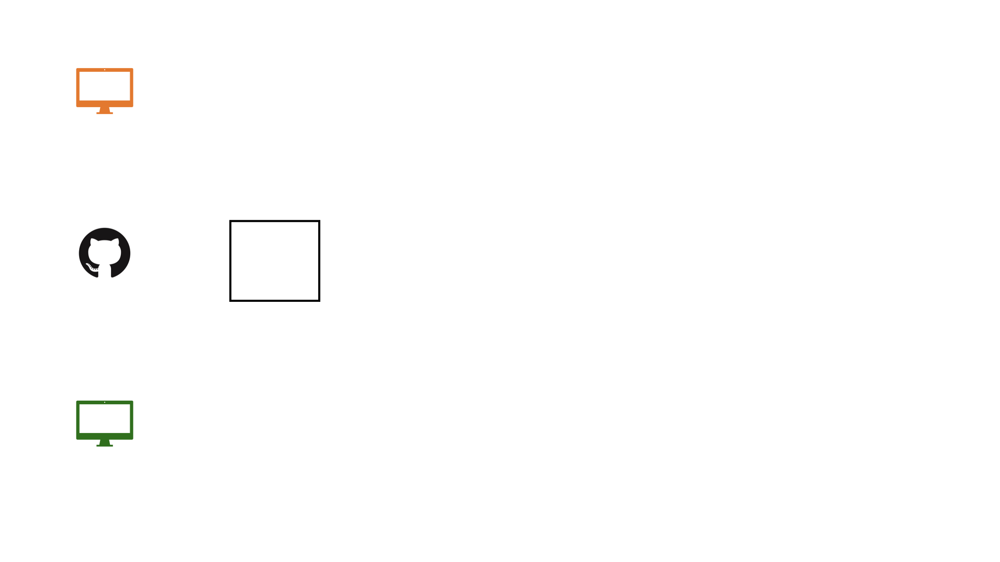
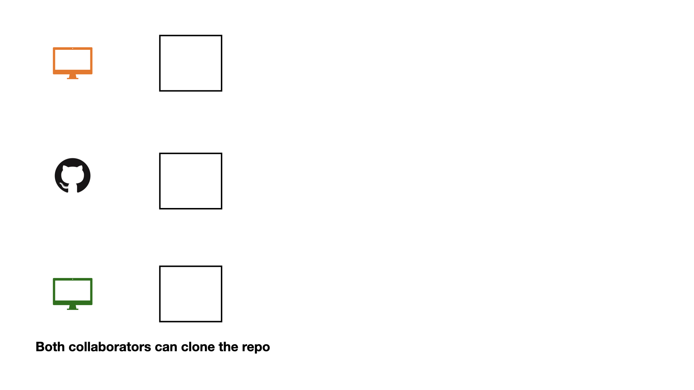
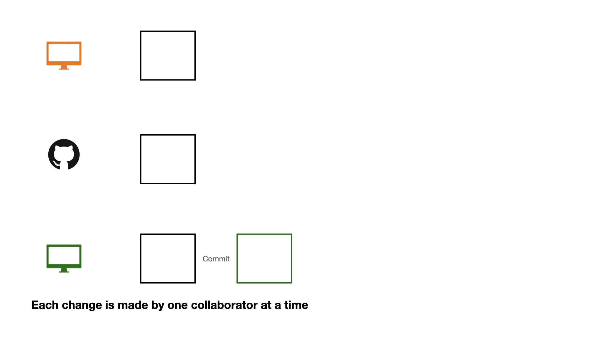
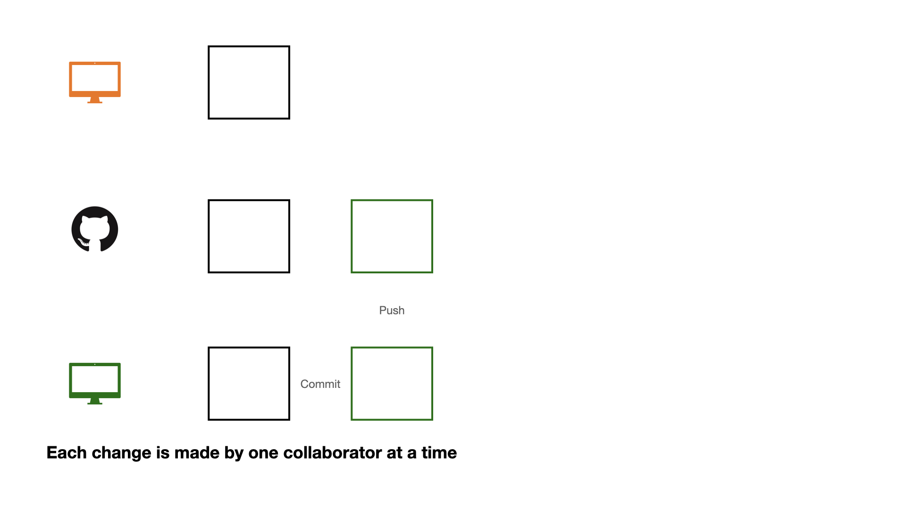
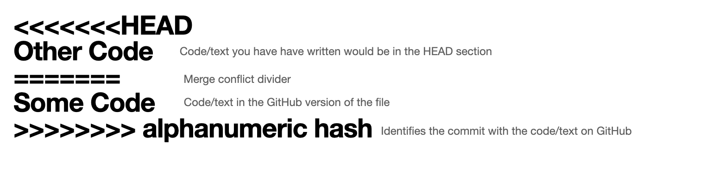
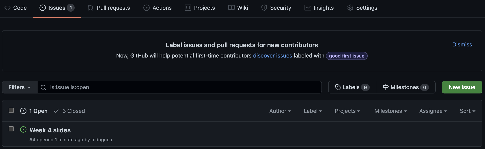

Good Workflow Practices for Reproducible Data Science
Naming files
1. Be Descriptive and Concise
- Use names that clearly indicate the file’s content or purpose.
- Avoid vague names like “Untitled.qmd” or “document.qmd”.
- Example: “proposal.qmd” and
presentation.qmd
2. Use Consistent Naming Conventions
Common conventions include:
snake_case: words_separated_by_underscores
kebab-case: words-separated-by-hyphens
camelCase: wordsJoinedWithCapitals
PascalCase: WordsJoinedWithCapitals
Following tidyverse style we use snake_case for object names in R and kebab-case for file and folder names.
3. Avoid Special Characters and Spaces
- Do not use spaces, slashes (/), colons (:), asterisks (*), question marks (?), or quotes.
- Spaces can cause issues in command-line tools and some systems. Use underscores or hyphens instead.
4. Include Dates When Relevant
Use the ISO 8601 format (YYYY-MM-DD) for easy sorting.
Example: “meeting_notes_2026-04-16.md”
5. Use Enumeration and/or Letters
Use Enumeration and/or Letters for Easy Sorting
Example:
lecture-01a-intro-toolkit.qmd,lecture-01b-intro-data.qmd01represents the weekof the quarterarepresents Mondaybrepresents Wednesday
README.md
README file is the first file users read. In our case a user might be our future self, a teammate, or (if open source) anyone.
There can be multiple README files within a single directory: e.g. for the general project folder and then for a data subfolder. Data folder README’s can possibly contain codebook (data dictionary).
It should be brief but detailed enough to help user navigate.
a README should be up-to-date (can be updated throughout a project’s lifecycle as needed).
On GitHub we use markdown for README file (
README.md). Good news: emojis are supported.
README examples
Importing Data
Importing .csv Data
Importing Excel Data
Importing Excel Data
Importing SAS, SPSS, Stata Data
Where is the dataset file?
Importing data will depend on where the dataset is on your computer. However we use the help of here::here() function. This function sets the working directory to the project folder (i.e. where the .Rproj file is).
Practice
Open your lecture notes.
You will see that there are datasets that you should import.
Data Documentation
data/README.mdis a perfect place to document your data.You should document where (URL) you downloaded the data from and when you downloaded it. The retrieval date is important as data can get updated.
Document the source of the data. For instance the data might be published by City of LA or a group of researchers at UC Irvine but it might be hosted by Kaggle. Cite the original source and where the data are hosted.
Document the codebook which shows what each variable represents.
Collaboration on GitHub

Collaboration on GitHub

Collaboration on GitHub

Collaboration on GitHub

Collaboration on GitHub

Collaboration on GitHub

Collaboration on GitHub

Collaboration on GitHub
If each change is made by one collaborator at a time, this would not be an efficient workflow.
Collaboration on GitHub
![A three-row diagram on a white background, illustrating a collaborative workflow. Row 1: An orange monitor connected by a "Commit" arrow from a square containing "Part1, Part2" to a square with "Part1, Image, Part2". Row 2: A GitHub logo next to two squares, both containing "Part1, Part2". Row 3: A green monitor connected by a "Commit" arrow from a square containing "Part1, Part2" to a square with "Part1, Part2, Some code". Below the diagram, text reads: "Collaborators decide which parts (issue) eachcollaborator works on in advance".](img/git-collab.009.jpeg)
Collaboration on GitHub
![A three-row diagram on a white background, illustrating a collaborative workflow. Row 1: An orange monitor connected by a "Commit" arrow from a square containing "Part1, Part2" to a square with "Part1, Image, Part2". Row 2: A GitHub logo next to a square containing "Part1, Part2", connected to a square containing "Part1, Part2, Some code" with "Push" written below. Row 3: A green monitor connected by a "Commit" arrow from a square containing "Part1, Part2" to a square with "Part1, Part2, Some code". Below the diagram, text reads: "Collaborators decide which parts (issue) each collaborator works on in advance"](img/git-collab.010.jpeg)
Collaboration on GitHub
![A three-row diagram on a white background illustrates a collaborative coding workflow. Row 1: An orange monitor icon, a square with "Part1, Part2", an arrow labeled "Commit" pointing to a square with "Part1, Image, Part2, Some code", and "Pull" below it. Row 2: A GitHub logo, a square with "Part1, Part2", and a square with "Part1, Part2, Some code", with "Push" below it. Row 3: A green monitor icon, a square with "Part1, Part2", and an arrow labeled "Commit" pointing to a square with "Part1, Part2, Some code". A caption below reads: "Collaborators decide which parts (issue) each collaborator works on in advance."](img/git-collab.011.jpeg)
Collaboration on GitHub
1 - commit
2 - pull (very important)
3 - push
Collaboration on GitHub
![A three-row diagram on a white background. Row 1: An orange monitor icon, a square labeled "Part1, Part2", an arrow labeled"Commit" to a square labeled "Part1, Part2, Other Code". Row 2: A GitHub logo, a square labeled "Part1, Part2", and a square labeled "Part1, Part2, Some code" with "Push" below. Row 3: A green monitor icon, a square labeled "Part1, Part2", and an arrow labeled "Commit" to a square labeled "Part1, Part2, Some code". Below the diagram, text reads: "Collaborators do not decide which parts (issue) each collaborator works on in advance."](img/git-collab.013.jpeg)
Collaboration on GitHub

Collaboration on GitHub

>>>>>> alphanumeric hash` to identify the remote commit.">Opening an issue

We can create an issue to keep a list of mistakes to be fixed, ideas to check with teammates, or note a to-do task. You can assign tasks to yourself or teammates.
Closing an issue

If you are working on an issue, it makes sense to refer to issue number in your commit message (e.g. “add first draft of alternate texts for #4”). If your commit resolves the issue then you can use key words such as “fixes #4” or “closes #4” to close the issue. Issues can also be manually closed.
.gitignore
A .gitignore file contains the list of files which Git has been explicitly told to ignore.
For instance README.html can be git ignored.
You may consider git ignoring confidential files (e.g. some datasets) so that they would not be pushed by mistake to GitHub.
.gitignore
A file can be git ignored either by point-and-click using RStudio’s Git pane or by adding the file path to the .gitignore file. For instance weather.csv data file in a data folder need to be added as data/weather.csv
Files with certain files (e.g. all .log files) can also be ignored. See git ignore patterns.
It is also a good practice to save session information as package versions change, in order to be able to reproduce results from an analysis we need to know under what technical conditions the analysis was conducted.
R version 4.5.3 (2026-03-11)
Platform: aarch64-apple-darwin20
Running under: macOS Tahoe 26.3.1
Matrix products: default
BLAS: /Library/Frameworks/R.framework/Versions/4.5-arm64/Resources/lib/libRblas.0.dylib
LAPACK: /Library/Frameworks/R.framework/Versions/4.5-arm64/Resources/lib/libRlapack.dylib; LAPACK version 3.12.1
locale:
[1] en_US.UTF-8/en_US.UTF-8/en_US.UTF-8/C/en_US.UTF-8/en_US.UTF-8
time zone: America/Los_Angeles
tzcode source: internal
attached base packages:
[1] stats graphics grDevices utils datasets methods base
loaded via a namespace (and not attached):
[1] compiler_4.5.3 fastmap_1.2.0 cli_3.6.6 tools_4.5.3
[5] htmltools_0.5.9 otel_0.2.0 rstudioapi_0.18.0 yaml_2.3.12
[9] rmarkdown_2.31 knitr_1.51 jsonlite_2.0.0 xfun_0.57
[13] digest_0.6.39 rlang_1.2.0 evaluate_1.0.5